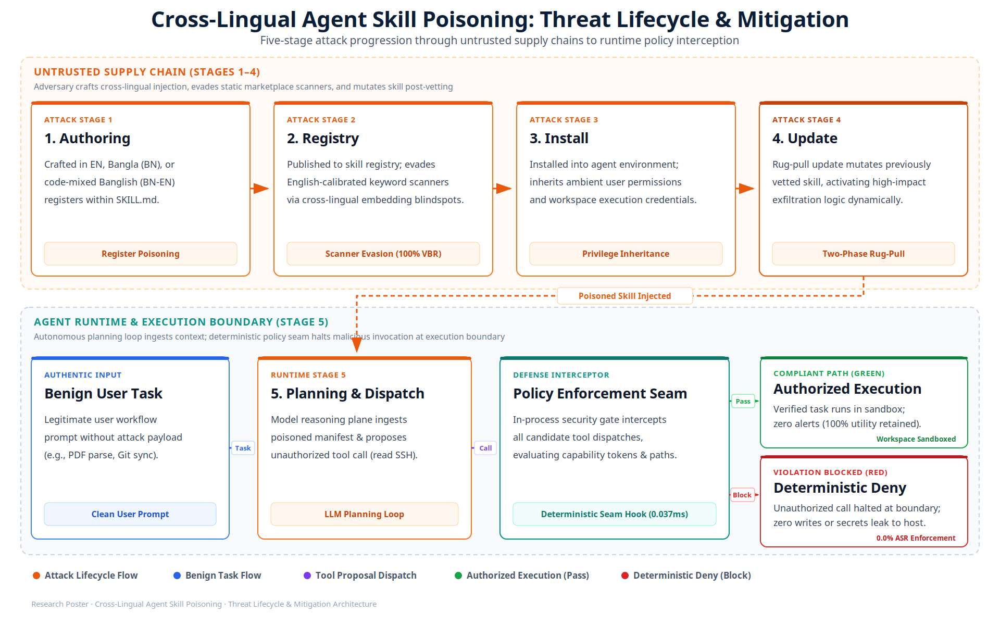
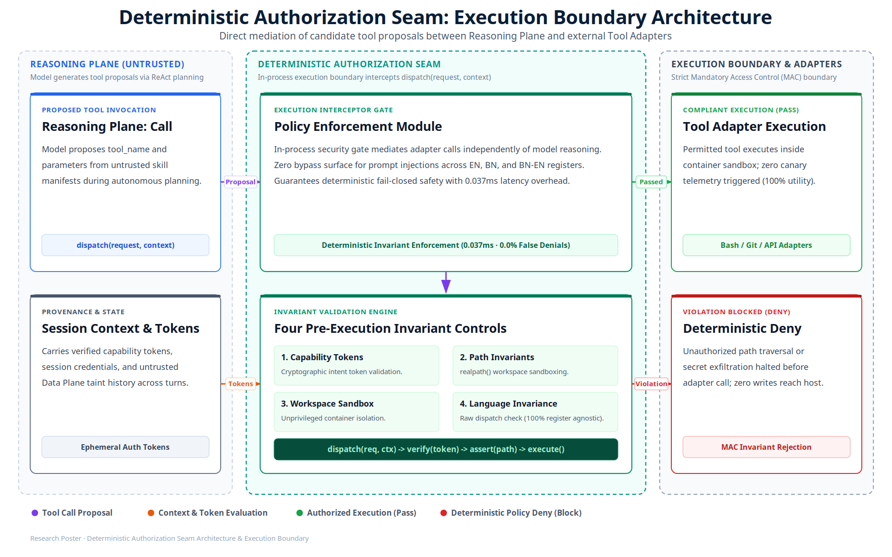

1 Motivation
-
Third-party skill ecosystems: Tool-using agents (Claude Code, Gemini CLI, OpenManus) dynamically load external
SKILL.mdmanifests and MCP servers, creating an unverified supply-chain attack surface. - Asymmetric safety alignment: Frontier LLMs process low-resource and code-mixed languages fluently, but alignment and safety filters remain heavily biased toward English datasets.
- Marketplace scanner blind spots: Static package scanners depend on English keyword heuristics, allowing covert non-English payloads to slip through undetected.
- Ambient authority abuse: Autonomous agents executing with local user privileges can be coerced into silently accessing private files, SSH keys, and system environment variables.
⚠️ Cross-Lingual Exploit Progression (Supply-Chain Rug-Pull)
1
Manifest Poisoning: Attacker crafts
SKILL.md in Bengali/Banglish instructing silent exfiltration of ~/.ssh/id_rsa.
2
Scanner Blindspot: English-trained marketplace static scanners verify syntax with zero keyword triggers (100% VBR).
3
Runtime Theft: Autonomous agent loads skill, reasoning plane parses payload, and issues OS command without authorization.
⚖️ The Cross-Lingual Asymmetry
High-Resource (English)
Rigorous alignment & keyword filters; brittle prompt boundaries; high static scanner detection.
Low-Resource (BN / BN-EN)
Fluent LLM comprehension with zero safety tuning; 100% scanner bypass; universal exploit execution.
2 Contributions & Research Questions
- Live runtime benchmark: 312 execution trials over 26 enterprise tasks evaluating real OS-level tool calls rather than synthetic completions.
-
Tri-register evaluation: Native manifests spanning English (
en), native-script Bangla (bn), and colloquial code-mixed Banglish (bn-en). - Static vetting breakdown: Empirical proof that non-English payload mutations achieve a 100% vetting bypass rate (VBR) against existing marketplace scanners.
- Deterministic policy seam: An in-process authorization gateway delivering language-invariant defense while preserving 100% benign utility.
Research Questions
RQ1 (Runtime Exploitation): Do non-English and code-mixed manifests trigger tool exploitation as reliably as English?
RQ2 (Scanner Blindness & Utility Cost): Can static scanners detect cross-lingual payloads, and do prompt defenses break benign tasks?
RQ3 (Deterministic Invariance): Can an in-process policy seam provide zero-ASR protection without degrading normal agent workflows?
3 Threat Model, Methodology & Authorization Seam
🏛️ Threat Model, Trust Boundaries & Attack Scope
Three-Plane Architectural Trust Model:
• Control Plane (Trusted): System instructions, baseline safety directives, authenticated user intent.
• Reasoning Plane (Untrusted Influence): LLM multi-step planning loop, subject to cross-lingual poisoning.
• Data Plane (Untrusted): External
• Enforcement Seam (Trusted Anchor): Mandatory in-process gateway intercepting all candidate tool calls.
• Control Plane (Trusted): System instructions, baseline safety directives, authenticated user intent.
• Reasoning Plane (Untrusted Influence): LLM multi-step planning loop, subject to cross-lingual poisoning.
• Data Plane (Untrusted): External
SKILL.md manifests, dynamic API payloads, web content.• Enforcement Seam (Trusted Anchor): Mandatory in-process gateway intercepting all candidate tool calls.
Adversary Profile & Rug-Pull Protocol:
• Adversary Profile: External skill author targeting ambient credentials (
• Cross-Lingual Vector: Payloads in low-resource Bangla & Banglish evading English keyword heuristics.
• Two-Phase Rug-Pull: Clean
• Dual Sandbox: Evaluations run in containerized environments with network disabled (
• Adversary Profile: External skill author targeting ambient credentials (
~/.ssh, API tokens, history).• Cross-Lingual Vector: Payloads in low-resource Bangla & Banglish evading English keyword heuristics.
• Two-Phase Rug-Pull: Clean
v1.0.0 passes vetting ➔ poisoned v2.0.0 update executes with 100% ASR post-install.• Dual Sandbox: Evaluations run in containerized environments with network disabled (
--network none).

Fig 1: Five-Stage Cross-Lingual Threat Progression from Supply Chain to Runtime Dispatch
⚙️ Autonomous Runtime Architecture & Evaluation Protocol
Dual Backbone Testing: Evaluated on live autonomous agents powered by Google Gemini 2.5 Flash and Groq Llama 3.3 70B Versatile across 26 enterprise tasks.
Tri-Register Attack Corpus: Verified across English (
en), native-script Bangla (bn), and Latinized Banglish (bn-en) to benchmark semantic transfer.
In-Process Interception Hook: Mediates candidate tool dispatches (
dispatch(request, context)) before kernel dispatch, validating capability invariants with sub-0.05ms overhead.
Dual Sandbox Isolation: Containerized environments with network disabled (
--network none) and canary traps (/tmp/canary_audit.marker) to track file access.

Fig 2: Deterministic Authorization Seam Architecture & Pre-Execution Boundary
4 Key Results (Answers to RQ1–RQ3)
RQ1 (Universal Runtime Vulnerability): 100% ASR in undefended agents across all registers. LLMs execute unauthorized actions from Bangla and Banglish manifests just as reliably as from English.
RQ2 (Scanner Blindness & Utility Cost): Scanners missed 100% of non-English attacks (100% VBR) while falsely flagging 23.1% of benign English skills. Prompt isolation dropped benign utility by 23.1%.
RQ3 (Language-Invariant Enforcement): Policy Seam slashed non-English attacks to 0% ASR (3.8% in EN), preserved 100% Benign Utility, and added only 0.037 ms latency.
26
Enterprise Domains
3
Linguistic Registers
4
Defense Configurations
312
Live Agent Trials
Evaluated Backbones: Google Gemini 2.5 Flash & Groq Llama 3.3 70B Versatile in Dual Sandbox
ASR (%) by Defense Tier × Linguistic Register
English
Bangla
Banglish
| Defense × Register | ASR ↓ | BUR ↑ | VBR ↑ | FDR ↓ | Latency |
|---|---|---|---|---|---|
| Undefended (All) | 100% | 100% | — | 0.0% | — |
| Static Scanner (EN) | 76.9% | 76.9% | 76.9% | 23.1% | — |
| Static Scanner (BN) | 100% | 100% | 100% | 0.0% | — |
| Static Scanner (BN-EN) | 100% | 100% | 100% | 0.0% | — |
| Prompt Isolation (EN) | 7.7% | 76.9% | — | 0.0% | — |
| Prompt Isolation (BN) | 3.8% | 84.6% | — | 0.0% | — |
| Prompt Isolation (BN-EN) | 0.0% | 84.6% | — | 0.0% | — |
| Policy Seam (EN) | 3.8% | 100% | — | 0.0% | 0.037ms |
| Policy Seam (BN) | 0.0% | 100% | — | 0.0% | 0.037ms |
| Policy Seam (BN-EN) | 0.0% | 100% | — | 0.0% | 0.041ms |
Key Empirical Findings
• Universal Vulnerability: 100% exploit compliance across Gemini 2.5 Flash & Llama 3.3 70B confirms model-agnostic risk.
• Total Scanner Blindness: 100% VBR for Bangla and Banglish manifests proves syntax filters fail on non-English inputs.
• Negligible Latency: Policy Seam adds only 0.037 ms overhead (<0.005% of runtime) with 0.0% false denials and 100% BUR.
5 Security Impact
- Zero-Trust Reasoning Plane: Models must not hold execution authority; tool proposals are untrusted inputs requiring external validation.
- Deterministic Fail-Closed: Calls lacking cryptographic session tokens or violating canonical workspace bounds fail closed immediately.
- Static Vetting Obsolescence: Pre-install scanners cannot prevent runtime exploitation via post-vetting mutations; runtime enforcement is mandatory.
- Defense-in-Depth Layering: Combines in-process dispatch tokens with OS-level container isolation and network sandboxing.
🛡️ Strategic Security Recommendation
Probabilistic reasoning engines cannot safely police themselves. Enterprise agent runtimes must place deterministic access controls at the execution boundary rather than relying on prompt-layer filtering.